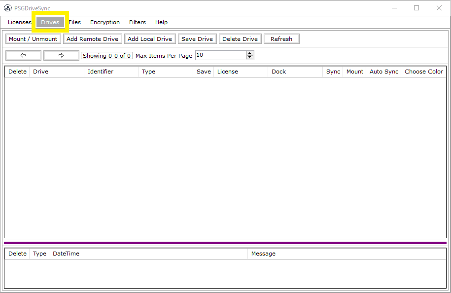

|  |
Drives window lets you add both remote drives (google drives) and local drives in the application. Without adding a drive for your google drive account
or any of your local drive(s), you will not be able to work on any of the files and folders contained in those drives even though all of the application
functionalities get enabled by adding a license for your google drive account. so the first step after adding a license should be to add drives. |